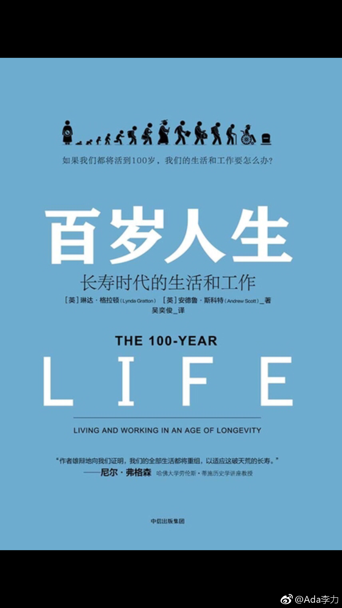

#读书# 《百岁人生》这本书写的很啰嗦，看完后我只打了个两星。但这本书的标题写得很好，引起了我的注意，翻完了。
这本书总体意思是说，2000年以后出生的美国人，有一半的概率可以活到100岁，那么我们目前关于职场和生活的理论很多是不适应于百岁人生的，比如说我们经常把人生分成三段教育工作和退休生活。如果按照60岁退休那么整整40年，都是一个退休生活，那你在工作期间积累的财富，基本上是不能够支撑你过一个比较舒服的退休生活的。
之前看到过日本的纪录片，活得长寿，对很多人来讲是一个诅咒。中国有句俗语说，不怕少年穷，就怕老来穷，出生率持续下降，人还活得越来越长，对哪个社会来讲都是一个莫名觉得恐惧的事情。
《百岁人生》这本书里有一些观点还是值得参考的。人们希望过的是幸福的生活，而幸福的衡量不仅仅是跟财富有关，也跟身心健康，人际关系，成就地位这些有关。作者把财富作为有形资产，而把健康，人际关系，知识之类作为无形资产。
我们的生命是这么长，那么在传统人的观念中间，工作主要是为了获得有形资产，而作者就会认为，在这个过程中间你也要考虑无形资产的积累，也就是说因为工作而忽视健康，忽视家庭，忽视亲朋好友的做法，应该不会再被提倡的。
还有就是对人生三段论的看法，教育-工作-退休，这个理论可能也不再适用。将来有可能很多人是好几段工作方式，工作一段时间，退休一段生活，再工作一段时间再退休一段生活，甚至工作和工作之间的连续性也没有那么强。
但这种多段状态跟目前社会主流观念以及社会制度冲突很大。只是作者提出的一个比较理想的状态而已。
对于人类寿命延长，存在的乐观和悲观的两种看法。悲观看法是说，因为财富的两极分化，会造成了富人的寿命越来越长，而穷人的寿命会越来越短。而乐观的看法是说，即使人工智能的发展能够替代掉人类原有的很多工作，但是人的创造性，还有人类群体组织沟通这些机器所不能替代的功能，可以给予人类更多的闲暇时间去做创造，从而让人类普遍生活得更好。
总体来讲，我对人类寿命延长还是持乐观态度的。
这本书总体意思是说，2000年以后出生的美国人，有一半的概率可以活到100岁，那么我们目前关于职场和生活的理论很多是不适应于百岁人生的，比如说我们经常把人生分成三段教育工作和退休生活。如果按照60岁退休那么整整40年，都是一个退休生活，那你在工作期间积累的财富，基本上是不能够支撑你过一个比较舒服的退休生活的。
之前看到过日本的纪录片，活得长寿，对很多人来讲是一个诅咒。中国有句俗语说，不怕少年穷，就怕老来穷，出生率持续下降，人还活得越来越长，对哪个社会来讲都是一个莫名觉得恐惧的事情。
《百岁人生》这本书里有一些观点还是值得参考的。人们希望过的是幸福的生活，而幸福的衡量不仅仅是跟财富有关，也跟身心健康，人际关系，成就地位这些有关。作者把财富作为有形资产，而把健康，人际关系，知识之类作为无形资产。
我们的生命是这么长，那么在传统人的观念中间，工作主要是为了获得有形资产，而作者就会认为，在这个过程中间你也要考虑无形资产的积累，也就是说因为工作而忽视健康，忽视家庭，忽视亲朋好友的做法，应该不会再被提倡的。
还有就是对人生三段论的看法，教育-工作-退休，这个理论可能也不再适用。将来有可能很多人是好几段工作方式，工作一段时间，退休一段生活，再工作一段时间再退休一段生活，甚至工作和工作之间的连续性也没有那么强。
但这种多段状态跟目前社会主流观念以及社会制度冲突很大。只是作者提出的一个比较理想的状态而已。
对于人类寿命延长，存在的乐观和悲观的两种看法。悲观看法是说，因为财富的两极分化，会造成了富人的寿命越来越长，而穷人的寿命会越来越短。而乐观的看法是说，即使人工智能的发展能够替代掉人类原有的很多工作，但是人的创造性，还有人类群体组织沟通这些机器所不能替代的功能，可以给予人类更多的闲暇时间去做创造，从而让人类普遍生活得更好。
总体来讲，我对人类寿命延长还是持乐观态度的。
- 